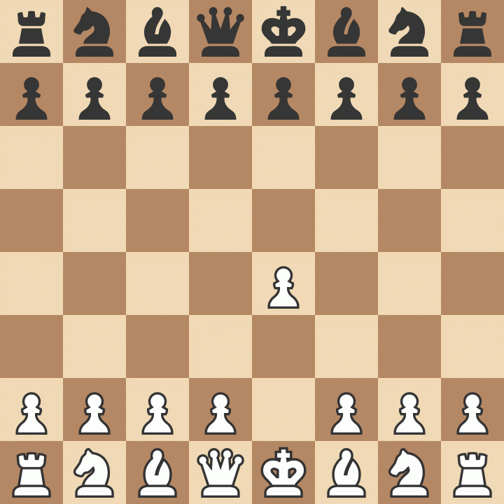

About Me
Hi.
I'm Abolfazl Babanazari, a second-year PhD student at the Colorado School of Mines. I hold a bachelor's degree in Computer Science from Amirkabir University of Technology (AUT), where my favorite courses were Linear Algebra, Graph Theory, Optimization, and Algorithms.
I have experience working on several medical imaging systems as a Junior Computer Vision Engineer, and I am now focusing on Robotic Perception.
Research
My research career is pretty new but I'm working on:
PARTE: Plane-Assisted Robust Transformation Estimation for Point Cloud Registration
A plane-assisted global registration pipeline that fuses plane and point evidence in a single consistency graph and solves for SE(3) via an extended Arun SVD and brief refinement. Tested on 5,153 pairs across 6 datasets, PARTE reaches the highest overall success rate (89%) at 403 ms mean runtime, and achieves 100% RR on ETH and KITTI.
Hobbies
When I'm not working I enjoy:
Chess
Playing chess which I'm not good at
Gaming
Playing video games
One of my all time favorites is ULTRAKILL
Music
No one can beat Lateralus by Tool
I play electric guitar which I'm not good at
Reading
My favorite book is Sophie's World by Jostein Gaarder